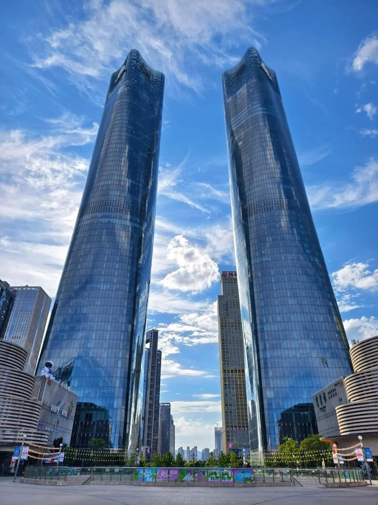

探索南昌地标 · 收集专属印章
唐 · 永徽四年 (公元653年)
🏗️ 唐代楼阁 · 高57.5米 · 明三层暗七层
滕王阁位于南昌市赣江东岸，为唐太宗李世民之弟——滕王李元婴所建。公元675年，初唐四杰之一的王勃途经南昌，适逢阎伯屿重修滕王阁落成，即席赋《滕王阁序》，以"落霞与孤鹜齐飞，秋水共长天一色"的千古名句，使滕王阁名扬天下。此后滕王阁历经宋、元、明、清共29次重建与修缮，现存建筑为1989年仿宋代形制重建，高57.5米，明三层暗七层，飞檐翘角，气势恢宏。
明 · 洪武年间 (公元1368年)
🏗️ 明代宫观 · 道教净明派祖庭
万寿宫位于南昌市西湖区，始建于明洪武年间，是为纪念东晋道教净明派祖师许逊而建的宫观。许逊以"忠孝廉慎"为教旨，倡导"净明忠孝"之道，被后世尊为"许真君"。万寿宫不仅是道教圣地，更是江右商帮的精神家园——明清时期，江西商人行商天下，每到一地必建"万寿宫"作为会馆，全国曾有数千座万寿宫。南昌万寿宫作为祖庭，历经六百余年风雨，见证了赣鄱大地的商贸繁荣与人文昌盛。
唐 · 天祐年间 (公元904年)
🏗️ 唐代始建 · 七层八面 · 高50.86米
绳金塔位于南昌市西湖区绳金塔街，始建于唐天祐年间（公元904年），相传建塔时掘得铁函一只，内有金绳四匝、古剑三把（分别刻有"驱风"、"镇火"、"降蛟"字样），还有舍利子三百余粒，故名"绳金塔"。塔身七层八面，高50.86米，为砖木结构楼阁式塔，是南昌现存最古老的砖木结构塔楼。绳金塔历经宋、元、明、清多次修缮，1966年曾遭严重破坏，1985年按原貌修复。塔顶的鎏金葫芦宝瓶，在阳光下熠熠生辉，被誉为"南昌镇城之宝"。
现代 · 1950年代 (公元1952年)
🏗️ 现代广场 · 占地7.8万㎡ · 纪念塔高53.6米
八一广场位于南昌市东湖区，始建于1952年，原名"人民广场"，是南昌市的政治、文化、体育中心。广场占地面积约7.8万平方米，中央矗立的八一起义纪念塔高53.6米，由叶剑英元帅题写"八一起义纪念塔"塔名。纪念塔基座四面镶嵌着"南昌起义"、"秋收起义"、"井冈山斗争"、"红都瑞金"四幅大型花岗岩浮雕，生动再现了中国共产党领导武装斗争的光辉历程。八一广场是南昌英雄城的标志性建筑与城市客厅，承载着深厚的红色记忆与革命精神。

现代 · 2010年代 (公元2010年)
🏗️ 超高层双塔 · 303米 · 63层
南昌双子塔位于红谷滩新区赣江之滨，由两栋高度相同、造型对称的超高层塔楼组成，建筑高度303米，共63层，是南昌第一高楼、江西第一高楼，也是中部地区最具标志性的现代建筑之一。双子塔设计灵感源于"腾飞的翅膀"与"赣江双帆"，寓意南昌这座英雄城在新世纪展翅高飞、扬帆远航。塔楼采用全玻璃幕墙与流线型设计，夜间LED灯光秀璀璨夺目，成为赣江两岸最亮丽的天际线。双子塔集五星级酒店、5A级写字楼、高端商业于一体，是南昌现代化城市发展的最佳见证。
汉 · 西汉 (公元前202年)
🏗️ 西汉王侯墓 · 出土文物万余件 · 金器115公斤
海昏侯墓位于南昌市新建区大塘坪乡，是西汉昌邑王、汉废帝刘贺的墓葬。刘贺系汉武帝之孙，在位仅27天即被废黜，后被封为海昏侯。2011年，海昏侯墓经考古发掘，出土金器、玉器、漆器、竹简、木牍等珍贵文物一万余件（套），其中金饼、马蹄金、麟趾金等金器共385枚，总重约115公斤，为汉代诸侯王墓出土金器之最。此外，出土的《论语》竹简中发现失传已久的"智（知）道"篇，为儒学思想史研究提供了全新文本依据。海昏侯遗址的发现，被学界誉为"北有兵马俑，南有海昏侯"，是21世纪中国最重大的考古发现之一。
分享本站